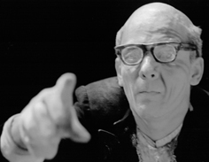

Información: (+57) 350 215 11 00 (WhatsApp)
- Festival de Teatro de Cali, 2003
- Festival El Gesto Noble, Carmen de Viboral, 2005
- Festival Internacional de Teatro, Manizales, 2005
- Los bellos días
Por Gustavo Arango
- La quietud de la luz Por Lina Castaño
- El paisaje de la condición humana Por: Diego Sánchez
- Notas sobre Los bellos días - Pintura móvil
Por: Cristóbal Peláez González
LOS BELLOS DÍAS
de Samuel Beckett
 |
|
El paisaje de la condición humana
Por: Diego Sánchez
Podríamos decir que Los bellos días fue una obra escrita por encargo. Cuentan que Suzanne Dechevaux-Dumesnil, con quien Beckett se casara en 1961 después de muchos años de convivencia, le sugirió que escribiera una obra optimista y el resultado fue este texto que ahora nos ocupa.
Una vez más Beckett nos ofrece personajes al borde del colapso, seres sin futuro, en condiciones extremas pero con una salida a la mano, salida que los personajes tendrán en cuenta pero por la que nunca optaran porque es ahí, en esas condiciones donde se encuentran a gusto, no resignados, por el contrario, agradecidos y en este caso particular, contentos.
Beckett ha creado un mundo propio, único y bastante parecido al nuestro, donde ahonda en el sentido del ser humano, proponiendo ciertas tesis propias y dedicándose a demostrarlas, tesis que han sido acogidas en muchos casos como desalentadoras lecturas de lo que es y ha logrado el ser humano, pesimismo trágico y mofa de la existencia, pero leídas en otros círculos como estudio preciso, alegoría y espejo -que no cóncavo como Valle Inclán- de nuestro mundo. “Es absurdo considerar a Beckett con las etiquetas de la negatividad o la desesperación. Beckett, simplemente, nos observa. Nos mira desde dentro y desde fuera. Desde arriba y desde abajo. Y lo hace activamente, compartiendo nuestra incertidumbre. Cuando acusamos a Beckett de pesimismo, nosotros mismos somos los personajes de Beckett en una obra de Beckett”, decía Peter Brook.
"Todos los hombres por naturaleza desean saber" Aristóteles
Esta puesta en escena de Los bellos días nace de la necesidad de entender. Hago pública confesión del sufrimiento de este mal. Después de múltiples lecturas del texto dramático a cuyo término saltaban mil preguntas sobre el sentido, la significación, el propósito y demás interrogantes de la razón, quedaba la única certeza de que había algo bastante atrayente y diciente pero que escapaba a la simple lectura y de ahí la necesidad creada de ponerla en 3D. Sin embargo, el resultado aún hoy años después del estreno, sigue siendo similar. ¿Qué pretende Beckett? ¿Por qué aparecen los personajes en semejantes condiciones? ¿Qué pretende significar? Pero también la evidencia de una pieza mágica, de un texto inconmensurable, de un alegre retrato de la circunstancia humana.
Beckett magno arquitecto de la escena
El texto de Los bellos días escrito a principios de los 60 es una prueba indiscutible del gran conocimiento de las leyes técnicas y dramáticas de la escena. Poblado de precisas acotaciones, citas constantes las más de ellas irreconocibles para el común de los mortales, juegos de palabras reiterativos que el espectador completará en aras de algún sentido; todo esto hace pensar que no es fácil fracasar al llevarlo a escena, basta seguirlo. El autor nos obliga a poner en escena justo lo que él ha escrito, su concepción escénica, estética. Queda a nosotros seguirle con la obediencia rítmica de un buen orfebre que sonríe mientras apuntala su herramienta.
Tenemos un excelente plano, poseemos un muy buen terreno, queda a prueba nuestro desempeño como ingenieros.
La quietud de la luz
Por Lina Castaño
La imagen se alza plena a través del artificio de la luz. Dos seres en la alteridad de la sombra más resueltamente iluminada descubren las palabras de las que están hechos. El recuerdo, la fatiga devuelve, trae, despierta en sus rostros. Un timbre suena: los objetos como las palabras pasarán en ellos. En la mujer a borbotones, entran y salen, mesuradas, necesarias, altivas, pequeñas, juguetonas, torrenciales. En él son insinuaciones, acompañan, apoyan las de ella, balbucean, suenan, responden. A veces por encima de las palabras los sonidos luchan para que el día no sea el silencio de labios apretados. La aridez de sus cuerpos se revela sin pudor en la persistencia inclemente de la luz. Dos existencias arrancadas a la cotidiana perpetuidad de sus gestos están ahí para ser contempladas. Pero qué clase de sol es ese que ni en sus rasgos más deslumbrantes parecemos reconocer. Son seres en las palabras, seres en los objetos. Seres a la luz de su quietud. Eterno presente. Del día a la noche uno y otro día siempre el mismo. De cada día cada noche más o menos cerca uno del otro como un teorema de posibilidades-relaciones infinitas pero al límite, ella respecto a él, respecto a lo que le rodea, en la misma proporción hacia las acciones que realiza con aguda precisión. La luz que les riega no ha de ser más que la que el recuerdo descubre. Infatigablemente luchan para no abandonarse. La tensión es la constante hacia el hundimiento. Se sostienen en la línea de la escucha y la visión: estás ahí, puedo verte, me ves, me escuchas, respondes, escucho, te veo, alcanzo a escuchar, si estás estoy, si escucho ilumino tu voz. Un poco más cerca, un poco más lejos. Otro día feliz. Seres hechos en el antes del abandono de las palabras. Los más cercanos días de felicidad se desbordan en la repetición. La quietud deslumbra. Las palabras adquieren el mismo tono de los objetos fieles. Cada cosa se ha ido llenando como de sed sus días. Son ellos los objetos que atesoran. Se guardan como las palabras a su existencia. Hacemos parte de esas palabras al escucharlas, nos envuelven en su clara y perenne inutilidad. Objetos velados por una cotidianidad más cercana a la extrañeza que al naturalismo. Qué de ahí nos llama, nos convoca, nos seduce. De qué nos reímos. Un cepillo, un espejo, un revólver, un perfume, una sombrilla, son aquí otra cosa. Esa arca espesa de palabras que apuntan hacia nada extrañamente nos despierta en algo que parece la vida y se desprende en rasgos tan bellamente humanos. En extremo delicada, por momentos inaudible, cercana al susurro la obra despierta al oído en otro lugar. La imagen crece. La superficie de sus bellos días flota en cada objeto compartido a nuestros ojos y así su naturaleza se torna sublime. Tanta luz enceguece. Al final el timbre (qué lo impulsa, qué les hace hablar, qué nos hace escuchar) obliga a salir de lo que poco a poco advertimos han ido construyendo al tesón de la luz sus frágiles cuerpos de arena hundidos en la sombra de nuestra propia visión.
Notas sobre Los bellos días
Pintura móvil
Cristóbal Peláez G.
Dos autores han estado en la cúspide del vasto promontorio de las visiones sobre el siglo XX, el primero de ellos fue Franz Kafka que expresó un mundo de pesadilla semejante a un laberinto brumoso que a través de sus estructuras burocráticas había logrado convertir al individuo en una criatura inocua aplastada por el peso de las jerarquías. Un universo de relaciones que había alcanzado el punto máximo de separación entre el individuo y el estado. En la otra instancia está Samuel Beckett dibujando al hombre como un detritus despojado de cualquier responsabilidad social e incapaz de reengancharse a la sociedad, un ser sin voluntad que se dedica a reflexionar con impavidez sobre la tragedia de la existencia. Si en Kafka el resultado es atormentador y desesperante, en Beckett es altamente mordaz.
Dios hizo al mundo y al parecer se sintió muy orgulloso de su obra, el mortal Beckett desprecia esa creación, y también a todas las criaturas vivientes. Una de sus constantes, en su narrativa y dramaturgia, es la burla, el infaltable chasco sobre la imperfección del mundo y la voluntad del individuo para rechazarlo. Al contrario de lo que se ha querido ver no son sus personajes indigentes o excluidos, sino individuos que han alcanzado tan alta comprensión de la vida que adoptan el gesto (iba a escribir valor, pero el término sería inexacto) de marginarse, de sustraerse. Otro gesto característico es la absoluta conciencia de su voluntaria exclusión. Molloy se sienta en la cama de su madre a escribir para un anónimo y desconocido personaje que de tanto en tanto aparece a recoger sus apuntes, y Morán, plácido pequeño burgués, bien instalado en su condición social, ha sido comisionado por no se sabe quién para ir al encuentro de Molloy, nunca se encuentran, lo que ocurre es que finalmente Morán resuelve voluntariamente convertirse en un Molloy. Al terminar el libro cada lector está abocado a preguntarse cuánta cuota de Molloy -es decir cuánto despojo- hay en su existencia.
El ciudadano corriente en la Europa de posguerra procuraba como un deber personal y social insuflarse optimismo, tratando de pensar que lo peor había ocurrido. Los poetas nunca lo entendieron así. Su profundo conocimiento e intuición de la naturaleza humana le mostraba que el terrible holocausto era apenas un pequeño fragmento en la historia humana. Beckett fue señalado por algunos como un tremendo desconfiado de las grandes capacidades redentoras del hombre. Para no sucumbir ante la total desesperanza era necesario aferrarse a alguna brizna de fe. De alguna manera el escritor irlandés preparaba la respuesta en la dramaturgia que primero elabora en inglés con el sugestivo título de Happy days (1962) y después reescribe en francés como Oh les beaux jours. Una especie de teorema y confrontación de la situación límite y la capacidad humana para resistir con optimismo, una comedia trágica con sustento estoico como queriendo hacer eco de las palabras de Séneca: “Siempre es peor al día siguiente”. La resistencia ante el deterioro y la decadencia, la fuerza espiritual que a pesar de todo nunca se da por vencida. Si esto fuera escrito por un Claudel el resultado habría sido aleccionador, pero al tener la carga beckettiana se constituye aún en burla peor, hasta ese punto Beckett es un cínico despiadado.
El autor como buen racionalista desconfiaba profundamente del arbitrio de la puesta en escena. De sobra son conocidas sus precisiones en la acotación de los movimientos y silencios de los actores. En Los bellos días esas acotaciones son rigurosamente burocráticas, exhaustivas, aritméticas. La acción y el habla están predeterminadas desde la escritura, y el director solamente tiene la libertad del matiz y la intensidad actoral. De su escritura parece desprenderse una cadena de suposiciones “qué pasaría si…”. “imaginemos que…”, “cómo me comportaría en esta situación”.
Los bellos días es un montaje realizado por el Teatro Matacandelas en el año 1998, bajo la dirección de Diego Sánchez y con la actuación de María Isabel García y Juan David Toro. Para el programa de mano en el estreno había escrito algunas notas que el tiempo ha revaluado y que hoy no son exactas. Cierto era que constituyó la ópera prima del joven director, un trabajo que en lo posterior ha refrendado con varias direcciones compartidas, como es el caso de Los ciegos y La chica que quería ser Dios. En cuanto a María Isabel García consideramos que se ha sostenido en su papel y que cada día puede aportarle más a la exigencia del autor. Juan David Toro posee ya una considerable trayectoria que lo avala como un actor versátil, y tremendamente voluble, es decir, hecho y formado para moverse entre varias posibilidades histriónicas. En este rol nos sorprendió, ya no nos sorprende, está en lo suyo. Recordemos que el santo Patrón del actor es Proteo que puede adoptar cualquier apariencia.
Una de las grandes torpezas de la crítica teatral -y literaria en general- fue el haber acuñado el rubro de absurdo a toda aquella franja escénica que proviene de los años 50. Allí, en ese zurrón torpe, clasifican a Beckett y a Ionesco con una profusa constelación de autores que estaban rompiendo la tradición de un drama demasiado ligado al naturalismo y a los reflejos directos de la realidad. Absurdo era todo aquello que se escapaba de la comprensión crítica contemporánea. Hoy sabemos que una obra como Los bellos días es un ensayo teatral sobre la ausencia (¿y la negación?) del cuerpo, también una experimentación sobre los flujos del habla, pertenece a esas dramaturgias donde el elemento predominante no es la abundancia y la sumatoria sino el sustrato, y de ahí que toda la estética del autor sea considerada como penuria, vale decir, una progresiva disminución que hurga en lo esencial.
A un espectador le oí decir que esta puesta en escena la veía como una pintura móvil. Me pareció muy acertado el comentario. Nosotros que hemos sido señalados -aplausos o rechiflas- por puestas muy inmóviles, empezamos a connotar en el público el gran movimiento que puede tener la quietud. Como Toledo, esa ciudad que se deja aquietar por el Tajo para poder flotar.